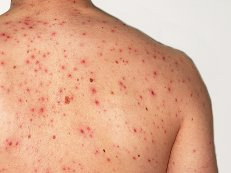

Визначення
Вітряна́ ві́спа (просторічне -вітря́нка, англ. chikenpox[1], лат. varicella[2], грец. Ανεμοβλογιά)( — контагіозне вірусне захворювання з групи герпесвірусних інфекцій, яке характеризується переважним ураженням дітей, помірною загальною інтоксикацією, поліморфною екзантемою з переважанням везикул.

Збудник
Збудник вітряної віспи та оперізувального герпесу (varicella-zoster virus/VZV, ГВЛ-3) належить до роду Varicellovirus, підродини Alphaherpesvirinae, родини Herpesviridae. Це нестійкий поза організмом людини вірус, його швидко інактивують дезінфекційні засоби, швидко гине при висиханні та температурі понад 60°С, але добре зберігається при низькій температурі. Поза організмом, на відкритому повітрі вірус гине приблизно за 10 хвилин. Капсид оточений рядом слабо пов'язаних білків, відомих під загальною назвою оболонки. Багато з цих білків відіграють важливу роль в ініціюванні процесу розмноження вірусу в зараженій клітині. Оболонка, в свою чергу оточена ліпідним шаром, який покритий глікопротеїнами, що зумовлюють зовнішній вигляд віріону.
Джерело і резервуар інфекції
Джерелом інфекції при вітряній віспі є хворий, який стає небезпечним для оточуючих з кінця інкубаційного періоду (за 6-7 годин до появи висипу) і аж до 5-ої доби з моменту появи останніх елементів висипу. Особливо небезпечними джерелами інфекції є хворі із наявністю везикул на слизових ротової порожнини, тому що в них швидко лопаються пухирці і виділяються великі дози вірусу з слиною. Додатковим джерелом може бути хворий на оперізувальний герпес, але він виділяє значно менше вірусів. Зрідка від людей можуть заражатися вищі примати та від них інфекція може передаватися й людям.
Механізм і шляхи передачі
Механізм передачі збудника при вітряній віспі — повітряно-крапельний. Незважаючи на слабку стійкість вірусів у довкіллі, доведено можливість їх поширення з повітря за межі кімнати, де перебуває хворий, через відчинені двері, систему вентиляції тощо. Таким чином зараження може поширюватись на весь будинок. Не виключена можливістьвертикальної передачі збудників вітряної віспи від матері до плоду, що може спричинити вади розвитку, але це трапляється дуже рідко.
Патогенез
Первинна інфекція проявляється у вигляді вітряної віспи, при цьому вхідними воротами інфекції є слизові оболонки верхніх дихальних шляхів, де проходить реплікація та первинне накопичення вірусу. Потім по лімфатичних шляхах вірус проникає в кров. Вірусемія доведена виділенням вірусу з крові, а також екзантемою, генералізованою по всьому тілу. Після стихання гострих проявів первинної інфекції вірус латентно зберігається в організмі.
Клінічний перебіг
Інкубаційний період при вітряній віспі триває від 11-21 дня, найчастіше — 14 днів.
Ускладнення
Ускладнення вітряної віспи можуть бути специфічними (зумовлені вірусом) і внаслідок приєднання бактеріальної інфекції. Найчастіше спостерігають ларинготрахеобронхіт, пневмонія, ураження нервової системи (енцефаліт, менінгоенцефаліт, мієліт, параліч лицьового нерва), бульозна стрептодермія (стрептококовеураження шкІри), флегмона, абсцес, імпетиго, лімфаденіт, стоматит, кон'юнктивіт, кератит, сепсис